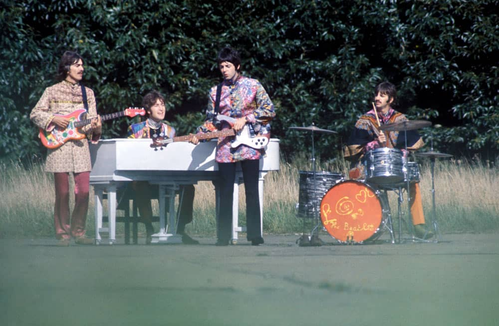
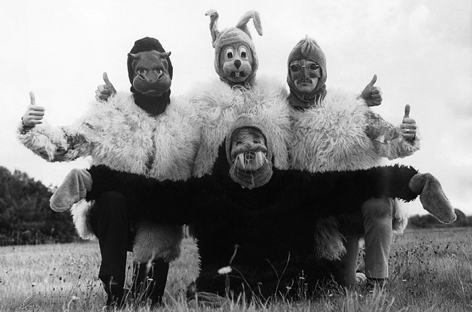

Magical Mystery Tour
Magical Mystery Tour adalah rekaman oleh band rock Inggris The Beatles yang dirilis sebagai EP ganda di Inggris dan LP di Amerika Serikat. Album ini termasuk soundtrack untuk film televisi 1967 dengan nama yang sama. EP dikeluarkan di Inggris pada 8 Desember 1967 di label Parlophone, sedangkan rilisan LP Capitol Records di AS terjadi pada 27 November dan menampilkan lima lagu tambahan yang awalnya dirilis sebagai single pada tahun itu. Pada tahun 1976, Parlophone merilis LP sebelas lagu di Inggris.

Daftar lagu
sisi pertama(soundtrack film)
- Magical Mystery Tour
- The Fool on the Hill
- Flying
- Blue Jay Way
- Your Mother Should Know
- I Am the Walrus
sisi kedua(singel 1967)
- Hello, Goodbye
- Strawberry Fields Forever
- Penny Lane
- Baby, You're a Rich Man
- All You Need Is Love 
Saat merekam lagu-lagu baru mereka, The Beatles melanjutkan eksperimen studio yang telah mencirikan Sersan. Pepper's Lonely Hearts Club Band (1967) dan suara psikedelik yang mereka kejar sejak Revolver (1966). Proyek ini diprakarsai oleh Paul McCartney pada April 1967, tetapi setelah mereka merekam lagu "Magical Mystery Tour", Album itu terbengkalai sampai kematian manajer mereka, Brian Epstein, pada akhir Agustus. Perekaman kemudian dilakukan bersamaan dengan pembuatan film dan penyuntingan, dan saat The Beatles melanjutkan asosiasi publik mereka dengan Meditasi Transendental di bawah guru Maharishi Mahesh Yogi.
Sesi telah ditandai oleh beberapa penulis biografi sebagai tak bertujuan dan tidak fokus, dengan anggota band terlalu terlibat dalam eksperimen suara dan mengerahkan kontrol yang lebih besar atas produksi. McCartney menyumbangkan tiga lagu soundtrack, termasuk "The Fool on the Hill" yang diliput secara luas, sementara John Lennon dan George Harrison masing-masing menyumbang "I Am the Walrus" dan "Blue Jay Way". Sesi tersebut juga menghasilkan "Hello, Goodbye", dikeluarkan sebagai single yang menyertai rekaman soundtrack, dan item musik insidental untuk film tersebut, termasuk "Flying". Selain keinginan The Beatles untuk bereksperimen dengan format dan kemasan rekaman, EP dan LP menyertakan buklet 24 halaman yang berisi lirik lagu, foto berwarna dari produksi film, dan ilustrasi cerita berwarna oleh kartunis Bob Gibson.
Terlepas dari kritik media yang meluas terhadap film Magical Mystery Tour, soundtrack itu sukses secara kritis dan komersial. Di Inggris, lagu ini menduduki puncak tangga lagu EP yang disusun oleh Record Retailer dan memuncak di nomor 2 di tangga lagu singel majalah (kemudian UK Singles Chart) di belakang "Hello, Goodbye". Album ini menduduki puncak daftar LP Top Billboard selama delapan minggu dan dinominasikan untuk Grammy Award untuk Album of the Year pada tahun 1969. Dengan standarisasi internasional katalog The Beatles pada tahun 1987, Magical Mystery Tour menjadi satu-satunya LP yang dihasilkan Capitol untuk menggantikan format yang dimaksudkan band dan merupakan bagian dari katalog inti mereka.

Karena EP tidak populer di AS pada saat itu, Capitol Records merilis soundtrack sebagai LP dengan menambahkan trek dari single non-album tahun itu. Sisi pertama berisi lagu-lagu soundtrack film, meskipun dalam urutan yang berbeda dari EP. Sisi dua berisi kedua sisi dari dua single band yang dirilis hingga saat ini pada tahun 1967, bersama dengan "Hello, Goodbye", yang dikeluarkan sebagai single yang didukung oleh "I Am the Walrus". Tiga dari lagu yang dirilis sebelumnya – "Penny Lane", "Baby, You're a Rich Man" dan "All You Need Is Love" – disajikan dalam suara stereo duophonic (atau "diproses") pada versi stereo Capitol dari LP .
The Beatles tidak senang dengan rekonfigurasi ini, karena mereka percaya bahwa trek yang dirilis pada sebuah single tidak boleh muncul di album baru. Lennon merujuk LP pada konferensi pers Mei 1968 untuk mempromosikan Apple Corps di AS,mengatakan: "Ini bukan album, Anda tahu. Itu berubah menjadi album di sini, tapi itu hanya [dimaksudkan sebagai] musik dari film."
⬅ Album sebelumnya Menu Album selanjutnya ➡